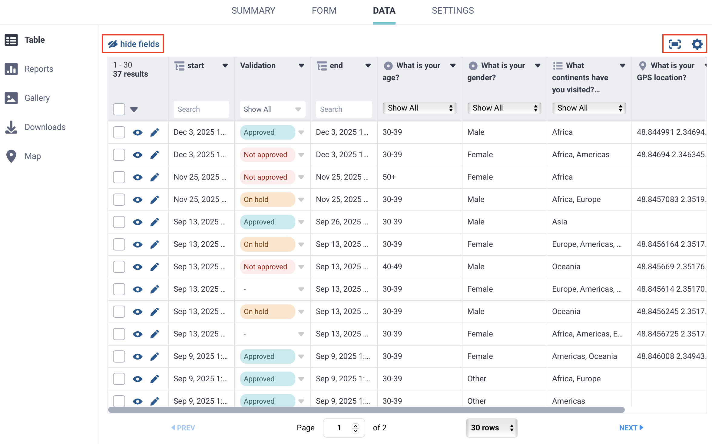
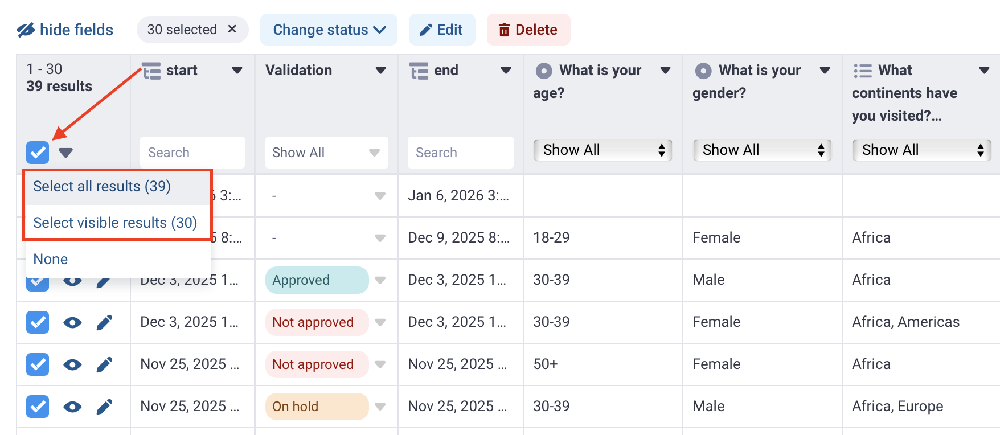

Busca en nuestra documentación, explora nuestros recursos y visita nuestro Foro de la Comunidad para obtener información más detallada
Última actualización: 5 Jun 2026
La vista Tabla en la sección DATOS de tu proyecto KoboToolbox ofrece una descripción general completa y personalizable de todos los envíos del proyecto. De forma predeterminada, se muestran todos los registros, con los envíos más recientes primero. Esta vista es el espacio de trabajo principal para explorar datos, supervisar la calidad de los datos, validar envíos y realizar ediciones.
Este artículo explica cómo:
Configurar la tabla de datos en la vista Tabla
Filtrar y ordenar tus datos
Ver y validar envíos
Para obtener más información sobre cómo realizar cambios en tus datos, consulta Modificar y eliminar datos.
Los propietarios del proyecto pueden controlar el acceso a los datos asignando permisos independientes para ver, editar, validar y eliminar envíos. Por ejemplo, pueden permitir que algunos miembros del equipo vean y validen datos mientras restringen los permisos de edición y eliminación.
Para obtener más información sobre los permisos a nivel de usuario para ver, validar y editar datos, consulta Compartir proyectos con permisos a nivel de usuario/a.
La tabla de datos en la vista Tabla muestra todos los envíos y campos de datos de forma predeterminada. En muchos proyectos, se necesita una vista más enfocada. Ajustar lo que aparece en la tabla te ayuda a trabajar de manera más eficiente, especialmente en formularios con muchas preguntas o grupos anidados. Puedes elegir qué campos mostrar y cómo se presentan los datos para adaptarlos mejor a tu flujo de trabajo.

Encima de la tabla de datos, puedes configurar los siguientes ajustes:
Ocultar campos: Haz clic en ocultar campos para ver una lista de todas las preguntas y campos de tu formulario. Todos los campos están seleccionados de forma predeterminada. Desmarca la casilla de cualquier campo que quieras ocultar y luego haz clic en Aplicar para guardar los cambios.
Alternar pantalla completa: Haz clic en Alternar pantalla completa para expandir la tabla de datos y que ocupe toda la ventana del navegador.
Opciones de visualización: Haz clic en Opciones de visualización para controlar cómo se muestran las etiquetas, los grupos y las etiquetas HXL en la tabla. Se pueden configurar las siguientes opciones de visualización:
Opción de visualización |
Descripción |
|---|---|
¿Mostrar etiquetas o valores XML? |
Elige si mostrar valores XML o las etiquetas completas de preguntas y opciones en cualquier idioma del formulario en tu tabla. |
Mostrar nombres de grupo en los encabezados de tabla |
Decide si los encabezados de columna de la tabla incluyen el nombre del grupo de preguntas (por ejemplo, |
Mostrar etiquetas HXL |
Muestra las etiquetas del Lenguaje de Intercambio Humanitario (HXL) si se agregaron a tu formulario. |
Dentro de la tabla de datos, puedes hacer clic en el encabezado de una columna y seleccionar Ocultar campo para eliminar los campos que no necesitas, o Inmovilizar campo para mantener visible un campo de uso frecuente mientras te desplazas.
Nota: Estas configuraciones afectan a la vista Tabla para todos los usuarios del proyecto.
Cada envío en la tabla de datos incluye campos generados por el sistema que ayudan a identificar registros y rastrear los detalles del envío. Estos campos aparecen como columnas separadas al final de la tabla y no se pueden editar.
Campo |
Descripción |
|---|---|
|
Un identificador único para la versión del formulario utilizada en el envío. Esto es útil si tu formulario cambió con el tiempo y necesitas saber qué versión recopiló los datos. |
|
Un número de ID generado por el servidor para el envío. Se asigna después de que el envío llega a KoboToolbox y es único en ese servidor de KoboToolbox. |
|
Un identificador generado automáticamente para el envío. Puede ayudar a identificar un registro, pero puede cambiar si el envío se edita, por lo que no es el campo más confiable para el seguimiento a largo plazo. |
|
La fecha y hora en que el servidor de KoboToolbox recibió el envío. En las exportaciones, este valor se almacena en UTC. En la tabla de datos, se muestra en la zona horaria del usuario. |
|
El nombre de usuario de la persona que envió los datos. Siempre se registra en los envíos de KoboCollect, y se registra en los envíos de formularios web solo cuando se requiere autenticación. |
|
Un identificador estable para el envío dentro del proyecto. Se toma del |
Nota: Estos campos son distintos de los metadatos del formulario habilitados por el usuario, ya que se generan automáticamente para cada envío. No es necesario agregarlos durante el desarrollo del formulario.
De forma predeterminada, los envíos en KoboToolbox aparecen en la tabla de datos en orden de envío, con las entradas más recientes en la parte superior. En proyectos grandes, filtrar y ordenar son funciones esenciales para explorar, revisar y limpiar datos. Te ayudan a encontrar rápidamente encuestados específicos, examinar patrones e identificar registros que requieren atención.
Nota: La vista Tabla en KoboToolbox ofrece filtrado y ordenación básicos para el seguimiento y la edición de datos. Para un análisis de datos más avanzado, incluido el filtrado con múltiples condiciones, recomendamos exportar tu conjunto de datos y usar software de hojas de cálculo o análisis.
Para cada columna de la tabla de datos, puedes usar las siguientes funciones:
Buscar: Usa la barra de búsqueda encima de los campos de texto, número y fecha para filtrar resultados. Por ejemplo, puedes buscar un ID único o filtrar por una edad específica.
Filtrar: Para los campos basados en preguntas de tipo selección, haz clic en Mostrar todo en el encabezado de la columna para abrir una lista de opciones de respuesta. Selecciona una opción para filtrar las respuestas.
Ordenar: Haz clic en el encabezado de una columna y elige Ordenar A → Z o Ordenar Z → A para cambiar el orden de los envíos.
Nota: Ordenar la tabla se aplica a todos los usuarios y persiste después de salir de la vista Tabla. La búsqueda y el filtrado se aplican solo a ti mientras estás en la vista Tabla y se restablecen automáticamente cuando la abandonas.
Abrir un envío individual te permite revisar todos los datos de un solo encuestado. La vista de envío individual incluye herramientas para examinar y gestionar un registro individual.
Para abrir un envío, haz clic en Ver en la fila correspondiente.

La ventana del envío muestra todas las respuestas e incluye las siguientes opciones:
Ver datos en cualquier idioma del formulario.
Mostrar valores XML junto a cada pregunta.
Ver y Editar el envío como formulario web.
Duplicar el envío.
Imprimir el envío.
Eliminar el envío.
Asignar un Estado de validación.

Dentro de la vista de envío individual, navega por los envíos usando < Anterior y Siguiente >.
La validación de registros ayuda a los equipos del proyecto a mantener la calidad de los datos, rastrear el estado de revisión y marcar los problemas que requieren seguimiento. El estado de validación aparece como una columna dedicada en la vista Tabla, y los usuarios con los permisos adecuados pueden actualizarlo para envíos individuales o múltiples.
Los estados disponibles son:
Aprobado: El envío ha sido revisado y confirmado como completo, preciso y adecuado para su uso en el análisis.
No aprobado: El envío no cumple con los requisitos de calidad de datos y debe excluirse del análisis o eliminarse del conjunto de datos.
En espera: El envío requiere revisión. Se necesita verificación adicional o seguimiento antes de que los datos puedan aceptarse o rechazarse.
La validación permite una revisión de datos estructurada en equipos colaborativos. Por ejemplo, los revisores pueden filtrar la tabla para mostrar solo los envíos que requieren revisión.
Nota: El propietario del proyecto puede otorgar el permiso de Validar envíos permiso a otros usuarios de forma independiente al permiso de Editar envíos.
El estado de validación se puede aplicar a varios envíos a la vez, lo que es útil para revisiones a gran escala o controles de calidad.
Para validar envíos en bloque:
Selecciona los envíos usando las casillas de verificación.
Haz clic en Cambiar estado.
Elige un estado de validación.
Nota: Puedes seleccionar todos los envíos de la página actual haciendo clic en la casilla de verificación del encabezado de la tabla. Para seleccionar todos los envíos del proyecto en todas las páginas, haz clic en la flecha junto a la casilla y elige Seleccionar todos los resultados.

_submitted_by se completa solo cuando un envío está vinculado a un nombre de usuario de KoboToolbox. En KoboCollect, este campo siempre se registra. En los formularios web, se registra solo cuando el proyecto requiere autenticación. Si el formulario permite envíos sin nombre de usuario y contraseña, este campo estará vacío._submitted_by en los envíos de formularios web, ve a FORMULARIO > Recolectar datos y desactiva "Permitir envíos a este formulario sin nombre de usuario ni contraseña".
¿Encontraste lo que buscabas? ¿La información fue clara? ¿Faltaba algo?
¡Comparte tus comentarios para ayudarnos a mejorar este artículo!